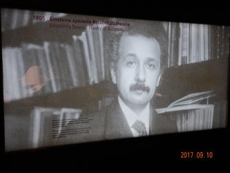
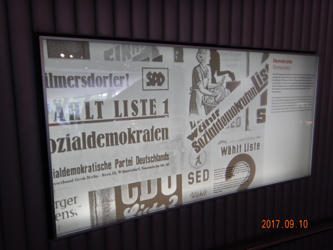
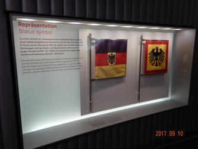
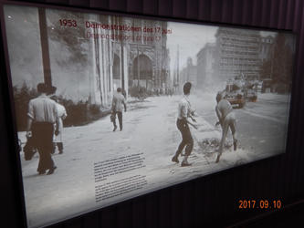
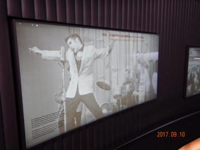
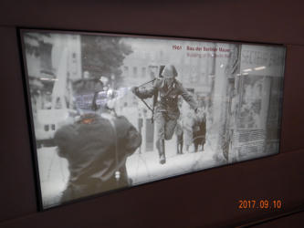
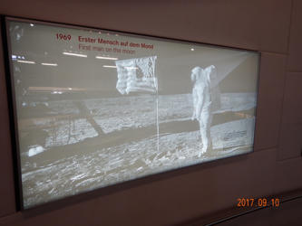

I have been consistent my whole life on my reply to the "if you could have only one high-end sports car what would it be?" (note: I have zero) question; a Porsche 911. So, being less than 90 miles away from Stuttgart I knew I would kick myself a few times if I did not make a trip over to this city where Porsche and Mercedes Benz call home and both have very impressive museums for their enthusiasts. Fortunately, I'm in Germany where all things go fast including the DB ICE Bullet Train I took that made this trip in about 30 minutes flat.
This train was fast, but not as fast as the Bullet Train Trip to Paris the family and I rode last year.
After arriving in Stuttgart, I grabbed a city train out to the Porsche Museum.
Interestingly enough, the first complete car you see in the museum is an early VW Beetle – well, not that interesting if you knew that Ferdinand Porsche created this vehicle. Ahh... this reminds me of my first car; a 1973 Super Beetle.
Next up, a great collection of my FAVORITE Porsche; the 356.
There were several of the BEAUTIFUL automobiles on display.
With the 356 being my absolute favorite Porsche, then why did I not answer the question about having only one high-end sports car with this vehicle? Well, at this point, these are just collectors' pieces. You can drive these around for sure, but nobody in their right mind would make it a daily use car. They are simply too valuable & rare. So... if I could have two high-end sports cars, put me down for a 356 Cabriolet along with my 911 Carrera. Yes, I'm practical; I'll take a hard top for my everyday car and a convertible for my Sunday drive. Now, wouldn't that be a nice two-car garage!
I've truly loved the 911 since I was a young boy. What an amazing looking vehicle that has stuck to its roots all of these years. My father owned a 1971 911T when I was in high school and I was lucky enough to drive it twice. I dreamed of somehow suckering my dad to sell it to me with a payment plan that stretched for at least 10 years, but it just wasn't in the cards. It was in a bad crash and never made it back to our home.  I am betting my dad missed that car even more than me as several years ago he bought the 2014 911 Carrera Cabriolet below and I know he got a TON of joy from it for a few years before he died back in November. Oh... and he NEVER let me drive this one! I guess it was HIS baby!
I am betting my dad missed that car even more than me as several years ago he bought the 2014 911 Carrera Cabriolet below and I know he got a TON of joy from it for a few years before he died back in November. Oh... and he NEVER let me drive this one! I guess it was HIS baby!
While the museum had a ton of 911s and racing derivatives, they chose to display this blue beauty as the introduction of this model on the walking tour.
Seriously, what a beautifully styled car and that flat-six rear engine sounds like music. Man, I really need to get a 911. I guess my 50th birthday will be here before we know it if anyone is looking for a gift. 
There are many more Porsche vehicles at the museum than I am showing here, but I did want to hit the high points; OK... I wanted to focus on the Porsche cars that I love. They even had the less than exciting models to me like the 914, 924 and 928. Interestingly enough, I have a soft spot for the 944.
I leave you with the silver Group B Porsche 959 which adorned my poster laden wall as a youth and would be an incredible collector's item to have in one's garage.
I really did enjoy checking out these, and all of the other, Porsche sports cars. For those who know the rich history of Porsche racing, you have to visit as there are an incredible number of race cars in those hallowed walls. For me, the street legal Porsche is the everyday supercar and always will be.
Next up, two quick city train rides and a 10 minute walk took me to the Mercedes Benz Museum which was also architecturally impressive.
As you can see from that last picture, there were a bunch of cars on display outside the museum. Basically, a car show to check out before you go inside.
I really was not expecting the lobby's distinct look. The first thing you do is ride the elevator to the top of the structure.
Yes, it is a bit wild (maybe even weird). To me, it is a mashup of scenes from Blade Runner, Brazil and Star Wars. After the dramatic introduction, you actually get dropped into a museum. As one might expect, this journey is really along the life of the automobile as a whole. There is a bunch of old cars – and a plane, too!
I really enjoyed the hall of large passenger capacity vehicles including this color bus.
Maybe because I found my own van's cousin; the Marco Polo. I want one of these!!
What I heard most about this museum was that it was not just a car museum. I heard it was a museum along the timeline of the life of the automobile. While that is true as the circular route you follow has 100+ of these info plaques in time-series order, I would still say it is a car museum. These "extras" are cool, but I think there are really there for those who are not so excited they got lassoed into coming to something they might not really have wanted to see. For that audience, maybe it is more than a car museum; but I think those folks are just fooling themselves. 
|
 |
 |
 |
|
|
|
|
|
|
|
 |
 |
 |
 |
|
|
|
|
|
Like with the Porsche museum, there is a big focus on racing here. I even learned there is such a thing as truck racing!
I really enjoyed the older racing cars. Doesn't this next one look like Racer X is going to jump into it!?!? BTW, how the hell did Speed not know this is his older brother Rex? Come on... his friggin shirt looks just like the Mach Five. Seriously, he couldn't figure that out?!
There were some awesome mid-history Mercedes Benz sports cars that got me excited – especially that sexy Gull-Wing.
As with the Porsche museum, I had to leave out some pictures as this might possibly be the most number of photos I have put into a blog post before. For car nuts, this city is probably in the Top 3 of destinations. I was happy to find this tiny 1:87 scale V-Class van that looks like my Metris down in the gift shop before I decided to call it a day and ride the bullet train back to Mannheim.
Did I need that tiny little toy for 20 Euros? Nope, but it is the same scale as HO model railroad cars, so I know somebody who is getting a cool little Christmas present for their layout.